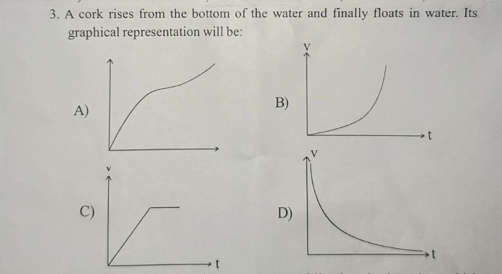
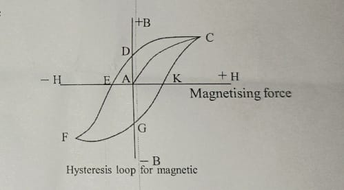
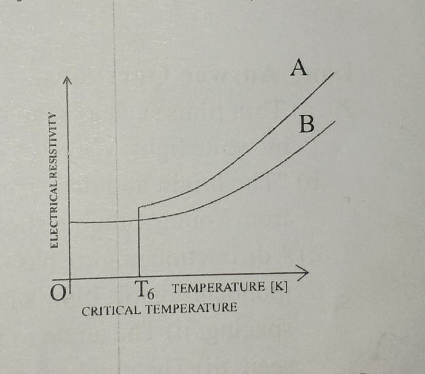
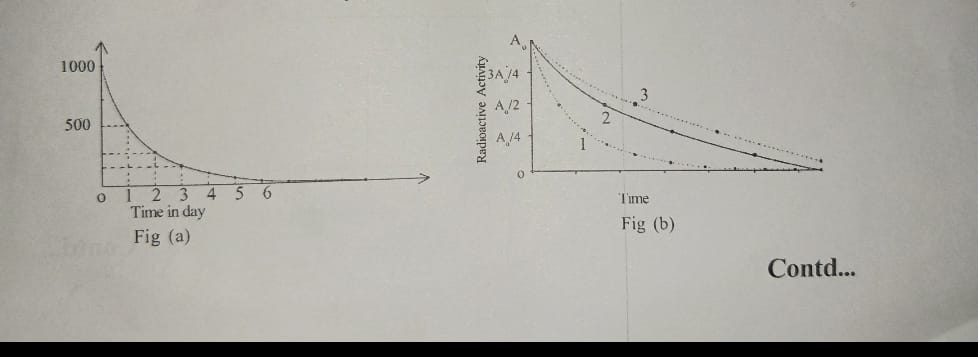
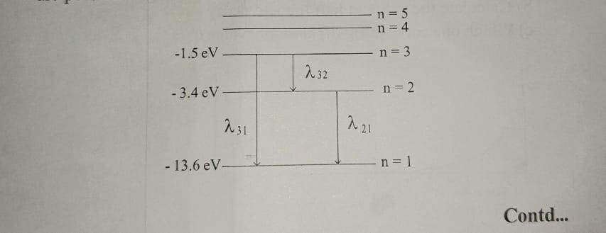
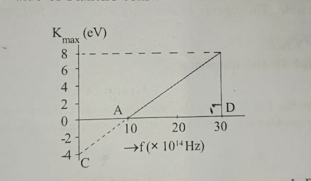

Group A — Multiple Choice Questions
Attempt all questions. [11×1=11]
- What is the factor affecting the radius of gyration of a body?
- A) Angular speed
- B) Axis of rotation
- C) Angular acceleration
- D) Acceleration due to gravity
- The length of a pendulum is increased by 21%. By what percentage does the period of motion increase?
- A) 9.8%
- B) 10%
- C) 11%
- D) 21%
- A cork rises from the bottom of water and finally floats. Which graph represents its velocity over time?

- If the efficiency of a petrol engine is η₁ and that of a diesel engine is η₂, which expression is correct?
- A) η₁ = η₂
- B) η₁ > η₂
- C) η₁ < η₂
- D) η₁ ≥ η₂
- In which thermodynamic process is the work done by a gas minimum?
- A) Isothermal
- B) Adiabatic
- C) Isobaric
- D) Isochoric
- What is the distance between a node and an antinode in a stationary wave, in terms of wavelength?
- What is the time taken by light to cross a glass slab of thickness 5 cm and refractive index 1.5?
- A) 0.2 ns
- B) 0.25 ns
- C) 0.3 ns
- D) 0.35 ns
- Which of the following represents the production of emf by maintaining a temperature difference between the two junctions of a loop of two dissimilar metals?
- A) Seebeck effect
- B) Joule effect
- C) Peltier effect
- D) Thomson effect
- Which portion of the given figure represents the coercivity?

- A coil has a resistance of 8 Ω and an inductive reactance of 6 Ω. What is the impedance?
- A) 6 Ω
- B) 8 Ω
- C) 10 Ω
- D) 14 Ω
- A diode used as a rectifier converts:
- A) Varying dc into constant dc
- B) dc into ac
- C) High voltage into low voltage
- D) ac into dc
Group B — Short Answer Questions
[8×5=40]
-
a) The angular velocity of the earth around the sun increases as it comes closer to the sun — why? [2]
b) A disc with moment of inertia 10 kg·m² about its centre rotates steadily at an angular velocity of 20 rad/s. Find: i) rotational kinetic energy, ii) number of revolutions per second. [3]
-
a) State Stoke's law and use it to derive an expression for determining the coefficient of viscosity of a given liquid. [1+2]
b) Write the equation of continuity and state two of its applications. [1+1]
OR
a) Define simple harmonic motion. Write the general equations for displacement and acceleration in SHM. [1+2]
b) Plot a graph of velocity of a particle in SHM. [1]
c) What will be the time period of a simple pendulum at the centre of the earth? Justify. [1]
-
a) Apply the first law of thermodynamics to obtain the relation Cₚ − Cᵥ = R, where the symbols carry their usual meanings. [3]
b) A petrol engine consumes 10 kg of petrol per hour. The calorific value of petrol is 1.14 × 10⁴ cal/g and the power of the engine is 30 kW. Calculate the efficiency of the engine. [2]
-
a) Obtain Laplace's formula for the velocity of sound in air, starting from Newton's formula. [2]
b) A car producing a note of frequency 500 Hz approaches and passes a stationary observer at a steady speed of 20 m/s. Calculate the change in frequency heard by the observer. (Velocity of sound = 340 m/s) [3]
-
a) Analyze the given graph and name the type of material represented by graph A and graph B. [2]

b) Define potential gradient. A potentiometer wire is 10 m long with a resistance of 20 Ω, connected in series with a battery of 3 V and a resistance of 10 Ω. Calculate the potential gradient along the wire. [1+2]
-
a) State and explain Lenz's law. [2]
b) A bar magnet falls through a metal ring — will its acceleration be equal to g? Justify your answer. [2]
c) According to Faraday's law of electromagnetic induction, induced emf = −N(dΦ/dt). What does the negative sign indicate? [1]
OR
a) Define the rms value of current. [1]
b) The emf in an AC circuit is represented as E = E₀ sin ωt. Show that the voltage across an inductor leads the current by π/2. Also draw a phasor diagram. [3]
c) Why does a capacitor block dc? [1]
-
a) Define half-life and mean life. [2]
b) Calculate the value of half-life and decay constant from Fig (a). [2]
c) Which curve in Fig (b) has a greater decay constant? Justify. [1]

-
a) Draw the free body diagram of an oil drop falling through air in Millikan's oil drop experiment, for both cases — when the field is applied and when it is absent. What is the conclusion of this experiment? [3]
b) How do P-waves and S-waves differ? [2]
Group C — Long Answer Questions
[3×8=24]
-
a) Thin films such as soap bubbles show beautiful colours when illuminated by white light — why? [2]
b) "The bright and dark fringes are equally spaced" — justify this statement using Young's double-slit experiment. [3]
c) A diffraction grating has 400 lines per mm and is illuminated normally by monochromatic light of wavelength 600 nm. Calculate: i) the grating spacing, ii) the angle to the normal at which the first-order maximum is seen, iii) the number of diffraction maxima obtained. [1+1+1]
OR
a) Why is end correction necessary for organ pipes? [2]
b) How is it possible to estimate that a vessel kept under an open tap of water is about to fill? Justify. [2]
c) In an organ pipe, notes of frequencies 200 Hz, 600 Hz, and 1000 Hz are heard. Is the pipe open or closed? [1]
d) Describe the various modes of vibration of the air column in a closed organ pipe. [3]
-
a) What are excitation potential and ionization potential? [2]
b) The given figure shows the different energy levels of a hydrogen atom. Estimate the energy values for n = 4 and n = 5. How many different transitions are possible? [2+1]

c) What is a rectifier? Describe the working of a full-wave rectifier using two P-N junction diodes. [3]
OR
a) What is the photoelectric effect? [1]
b) Describe Einstein's photoelectric equation. [2]
c) State and explain Bragg's law of X-ray diffraction. [3]
d) Calculate the value of Planck's constant and the work function from the given figure. [2]

-
a) A circular coil of radius R carries a constant current I. Find an expression for the magnetic field at point P, located at a distance x on its axial line. [3]
b) Why is Hall voltage much more measurable in semiconductors than in metals? Explain. [2]
c) Draw the magnetic field lines around two parallel current-carrying conductors in which the currents flow in opposite directions. [1]
d) Two long parallel conductors are placed 0.1 m apart and carry currents of 3 A and 2 A respectively, in the same direction. Calculate the force per unit length experienced by each conductor due to the other. (μ₀ = 4π × 10⁻⁷ H/m) [2]